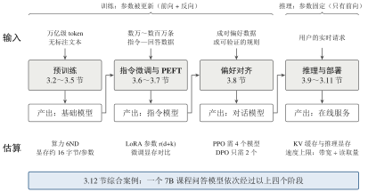

3.1 从随机参数到可用服务：大语言模型的生命周期
一个结构正确、参数随机的 Transformer 网络不会回答任何问题。它要经过哪些步骤才能变成每天使用的对话助手？本节把整个过程分为预训练、后训练（微调与对齐）、推理部署三个阶段，比较它们的目标、数据和资源消耗，并区分“训练”与“推理”这两个常被混用的词。结论是：预训练决定能力的上限，后训练决定能力是否可用，推理决定每一次调用的速度与成本；三者的瓶颈各不相同。
3.1.1 三个阶段
第 2 章介绍了大语言模型的结构：以注意力机制和前馈网络为基本单元、层层堆叠的 Transformer。结构只是容器，能力来自参数，而参数来自训练。图 3-1 给出了模型从随机参数到在线服务要经过的阶段，也是本章的地图。

图 3-1 本章知识地图。上排是各阶段的输入，中排是阶段及所在节，下排是产物；每个阶段的产物是下一阶段的起点。最下方的综合案例把四个阶段串成一条主线。图中缩写：PEFT 为参数高效微调，LoRA 为低秩适配，PPO 为近端策略优化，DPO 为直接偏好优化，KV 缓存为推理时保存的注意力键值中间结果；N 为参数量，D 为训练 token 数
预训练：让模型“有能力” 研发者从网页、书籍、代码、论文等来源收集数以万亿计的 token，经过清洗、去重和分词，让模型反复做一件事：根据前文预测下一个 token。为了把这件事做好，模型必须在参数中逐渐编码语法、事实知识、代码模式乃至一定的推理规律。预训练的产物称为基础模型（base model）。这一阶段消耗的数据和算力最多，通常占模型研发总计算量的绝大部分。
后训练：让模型“听话” 基础模型知识丰富，却不一定按人的要求做事。向它输入“请介绍一下上海”，它可能续写出另一个问题，因为在网页里一个问题后面紧跟另一个问题的情形并不少见。监督微调（Supervised Fine-Tuning，SFT）用大量“指令—回答”样例教会模型理解并执行指令，得到指令模型；偏好对齐（如基于人类反馈的强化学习 RLHF、直接偏好优化 DPO，见第 3.8 节）再让回答更有帮助、更诚实、更安全，得到日常使用的对话模型（chat model）。这些步骤都在已有模型上继续训练，统称后训练（post-training）。
推理部署：让模型“跑起来” 训练结束后参数固定下来。要为用户服务，还需决定：权重如何装入显存，用户输入如何处理，回答如何逐 token 生成，一张显卡能同时服务多少人，能否借助量化在更便宜的设备上运行。这一阶段的产物以对话助手、智能体、检索增强生成系统等形式进入应用（见第 5、6 章）。
表 3-1 比较了三个阶段。
表 3-1 大语言模型三个阶段的比较
| 比较项 | 预训练 | 后训练（微调与对齐） | 推理部署 |
|---|---|---|---|
| 核心目标 | 获得通用语言能力与知识 | 遵循指令、符合人类偏好 | 高效、稳定地生成回答 |
| 参数是否更新 | 全部更新 | 全部或部分更新 | 固定不变 |
| 典型数据 | 万亿级 token 的无标注文本 | 数万至数百万条指令或偏好数据 | 用户的实时输入 |
| 学习方式 | 自监督学习 | 监督学习、强化学习 | 不学习，只做前向计算 |
| 资源规模 | 数百至数万张 GPU，数周至数月 | 数张至数百张 GPU，数小时至数天 | 中小模型单卡乃至个人电脑可运行 |
| 产物 | 基础模型 | 指令模型、对话模型 | 面向用户的服务 |
三个阶段的投入很不对称。一个基础模型训练一次，可以派生出面向客服、编程、医疗、教育的多个微调模型；每个微调模型部署后又会被调用成千上万次。因此预训练追求能力上限，后训练追求能力可用，推理追求每次调用的效率与成本。本章开头的课程问答模型正是这种不对称的受益者：学校不必自己预训练，只需在现成的基础模型上做后训练和部署（第 3.12 节）。
3.1.2 训练与推理的区别
训练是改变参数的过程：模型对样本做出预测，与正确答案比较得到损失（loss），通过反向传播算出每个参数应如何调整，再由优化器更新参数。训练既有前向计算，也有反向计算，还要保存梯度和优化器状态，因此对算力和显存的要求都很高，而且规模越大越依赖多卡之间的通信。
推理是参数固定时使用模型的过程：模型只做前向计算，把输入映射为下一个 token 的概率分布，从中选出一个 token。推理没有反向传播，但回答是逐 token 生成的：回答越长，前向计算的次数越多；同时服务的用户越多，要缓存的中间结果也越多。第 3.9 节将说明，逐 token 生成的解码阶段主要受显存带宽和容量限制，而不是受算力限制。
辨析
“推理”在中文里有两个意思。本章的“推理”（inference）指用训练好的模型生成输出；第 3.8 节的“推理模型”（reasoning model）中的“推理”指逻辑推演能力，例如解数学题时的逐步推导。两者不是一回事：推理模型同样要经历“推理（inference）”才能产生输出。
本节要点
预训练得到基础模型，后训练得到指令模型和对话模型，推理部署把模型变成服务。
训练改变参数，需要前向、反向和优化器状态；推理参数固定，只做前向，但要逐 token 串行生成。
案例进度：课程问答模型不从零预训练，而是从开源基础模型出发，重点在后训练与部署。